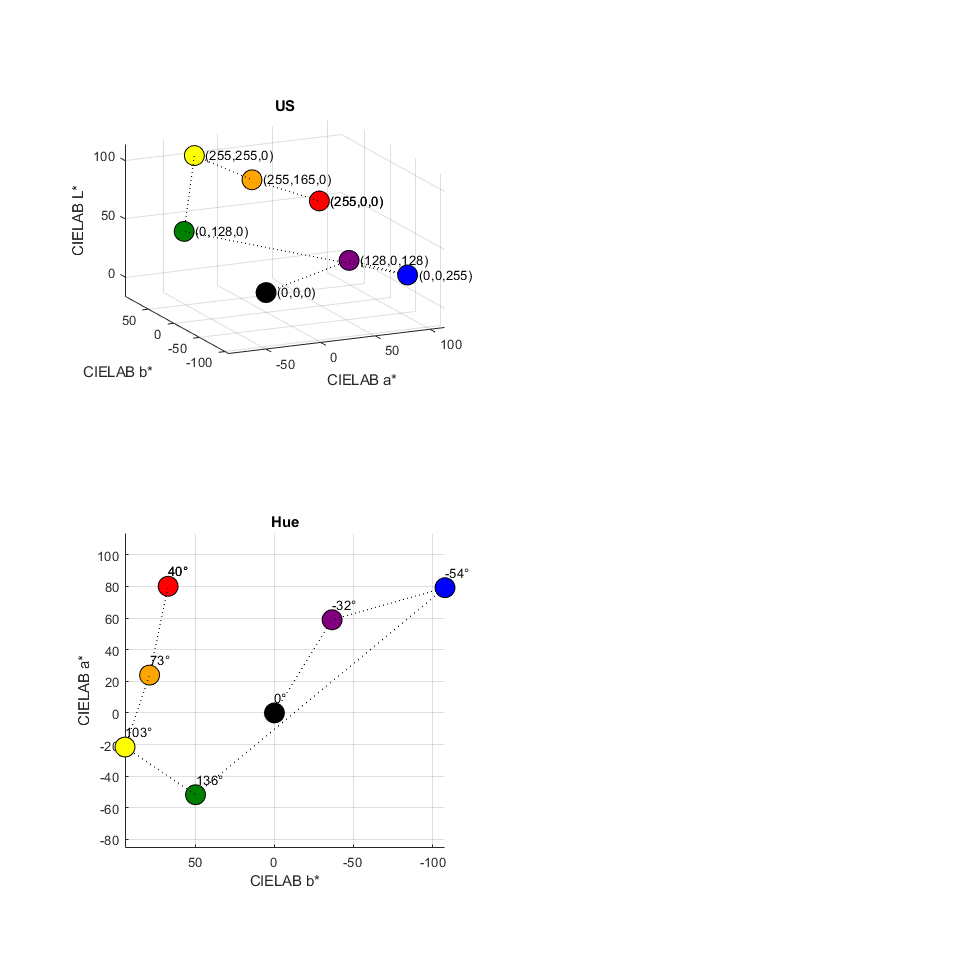

Contents
% Q: visualize the color scale proposed by IEC MT41 % function color_scale
% proposed RGB
c = [0 0 0;
096 000 080;
096 096 176;
080 192 080;
224 224 080;
208 144 000;
255 0 0;
255 255 255
];
https://en.wikipedia.org/wiki/Web_colors
black blue turquoise green yellow red magenta white
UK_CJM = [
0 0 0; % black
0 0 255; % blue
64 224 208; % turquoise
0 128 0; % green
255 255 0; % yellow
255 0 0; % red
255 0 255; % magenta
255 255 255 % white
];
Spain_EV = [
0 0 255; % blue
0 0 255; % blue
64 224 208; % turquoise
0 128 0; % green
255 255 0; % yellow
255 165 0; % orange
255 0 0; % red
255 255 255 % white
];
Greece_VT = [
0 0 0; % black
0 0 139; % dark blue
173 216 230; % light blue
0 128 0; % green
255 255 0; % yellow
255 165 0; % orange
255 0 0; % red
139 0 0; % dark red
];
Sweden = [
0 0 255; % blue
0 128 0; % green
255 255 0; % yellow
255 165 0; % orange
255 0 0; % red
255 0 255; % magenta
255 255 255 % white
255 255 255 % white
];
UK_DS = [
238 130 238; % violet
0 0 255; % blue
0 128 0; % green
255 255 0; % yellow
255 165 0; % orange
255 0 0; % red
255 0 0; % red
255 0 0; % red
];
Bulgaria = [
0 0 255; % blue
0 128 0; % green
255 255 0; % yellow
255 165 0; % orange
255 0 0; % red
139 0 0; % dark red
0 0 0; % black
0 0 0; % black
];
UK = [
0 0 0; % black
128 0 128; % purple
0 0 255; % blue
0 128 0; % green
255 255 0; % yellow
255 165 0; % orange
255 0 0; % red
0 0 0; % black
];
US = [
0 0 0; % black
128 0 128; % purple
0 0 255; % blue
0 128 0; % green
255 255 0; % yellow
255 165 0; % orange
255 0 0; % red
255 0 0; % red
];
scheme = 'US'
c = eval(scheme);
% c = [0 0 0;
% 000 255 255;
% 000 255 150;
% 135 255 0;
% 255 240 0;
% 255 150 0;
% 255 0 0;
% 255 255 255
% ];
%
% c = [0 0 0;
% 0 60 255;
% 0 165 255;
% 0 255 255;
% 75 255 0;
% 255 210 0;
% 255 0 0;
% 255 255 255
% ];
%
% c = [0 0 0;
% 255 0 165;
% 0 30 255;
% 0 165 255;
% 0 255 195;
% 255 225 0;
% 255 0 0;
% 255 255 255
% ];
% convert to CIELAB
lab = rgb2lab(c/255,'ColorSpace','srgb');
lch = lab;
for i = 1:8
a = lab(i,2);
b = lab(i,3);
rad = atan2(b,a);
chrm = (a.^2 + b.^2) .^ 0.5;
lch(i,3) = rad * 180 / pi;
lch(i,2) = chrm;
end
%
rgblab = [c lab];
xlswrite('rgblab.xlsx',rgblab)
% dE
dE_allpair = zeros(8,8);
for i = 1:8
for j = 1:8
lab1 = lab(i,:);
lab2 = lab(j,:);
dE = sum((lab1-lab2).^2).^0.5;
dE_allpair(i,j) = dE;
end
end
xlswrite('dE.xlsx',dE_allpair)
dE_allpair
scheme =
'US'
dE_allpair =
Columns 1 through 7
0 75.4383 137.6502 85.4366 137.2104 111.4505 117.3271
75.4383 0 74.2353 141.3179 167.8266 128.7979 108.3965
137.6502 74.2353 0 205.4568 235.1468 199.4218 176.3140
85.4366 141.3179 205.4568 0 74.0824 85.9557 133.1073
137.2104 167.8266 235.1468 74.0824 0 52.9451 114.0305
111.4505 128.7979 199.4218 85.9557 52.9451 0 61.3393
117.3271 108.3965 176.3140 133.1073 114.0305 61.3393 0
117.3271 108.3965 176.3140 133.1073 114.0305 61.3393 0
Column 8
117.3271
108.3965
176.3140
133.1073
114.0305
61.3393
0
0
3D plot
sameplot = 1; if sameplot==1 figure('Units','inches','Position',[1 1 10 10]) end if sameplot==1 subplot(2,2,1) else figure('Units','inches','Position',[2 2 4 4]) end hold on for i = 1:8 plot3(lab(i,2),lab(i,3),lab(i,1),'o',... 'MarkerFaceColor',c(i,:)/255,... 'MarkerEdgeColor',[0 0 0],... 'MarkerSize',15) step = i-1; % txt = sprintf('#%d (%d,%d,%d)',step,c(i,1),c(i,2),c(i,3)); txt = sprintf('(%d,%d,%d)',c(i,1),c(i,2),c(i,3)); text(lab(i,2)+10,lab(i,3),lab(i,1),txt) end plot3(lab(:,2),lab(:,3),lab(:,1),':k') grid on %axis([-100 100 -100 100 0 100]) axis equal xlabel('CIELAB a*') ylabel('CIELAB b*') zlabel('CIELAB L*') view(-25,15) title(scheme,'Interpreter','none') saveas(gcf,'t1.png')
if sameplot==1 subplot(2,2,3) else figure('Units','inches','Position',[2 2 4 4]) end hold on for i = 1:8 plot3(lab(i,2),lab(i,3),lab(i,1),'o',... 'MarkerFaceColor',c(i,:)/255,... 'MarkerEdgeColor',[0 0 0],... 'MarkerSize',15) step = i-1; % txt = sprintf('#%d (%d,%d,%d)',step,c(i,1),c(i,2),c(i,3)); % txt = sprintf('(%d,%d,%d)',c(i,1),c(i,2),c(i,3)); txt = sprintf('%.0f%c',lch(i,3),char(176)); text(lab(i,2)+10,lab(i,3),lab(i,1),txt) end % plot3(lab(2:7,2),lab(2:7,3),lab(2:7,1),':k') % exclude 1st and last plot3(lab(:,2),lab(:,3),lab(:,1),':k') grid on % axis([-100 100 -150 100 0 100]) axis equal xlabel('CIELAB a*') ylabel('CIELAB b*') zlabel('CIELAB L*') title('Hue') view(-90,90) saveas(gcf,'t2.png')
if sameplot==1 subplot(2,2,2) else figure('Units','inches','Position',[2 2 4 4]) end hold on for i = 1:8 plot3(lab(i,2),lab(i,3),lab(i,1),'o',... 'MarkerFaceColor',c(i,:)/255,... 'MarkerEdgeColor',[0 0 0],... 'MarkerSize',15) step = i-1; % txt = sprintf('#%d (%d,%d,%d)',step,c(i,1),c(i,2),c(i,3)); % txt = sprintf('(%d,%d,%d)',c(i,1),c(i,2),c(i,3)); txt = sprintf('%.0f',lch(i,2)); text(lab(i,2)+10,lab(i,3),lab(i,1),txt) end plot3(lab(:,2),lab(:,3),lab(:,1),':k') grid on % axis([-100 100 -100 100 0 100]) axis equal xlabel('CIELAB a*') ylabel('CIELAB b*') zlabel('CIELAB L*') title('Chroma') view(0,0)
if sameplot==1 subplot(2,2,4) else figure('Units','inches','Position',[2 2 4 4]) end hold on for i = 1:8 plot3(lab(i,2),lab(i,3),lab(i,1),'o',... 'MarkerFaceColor',c(i,:)/255,... 'MarkerEdgeColor',[0 0 0],... 'MarkerSize',15) end for i = 1:7 txt = sprintf('%.1f',dE_allpair(i,i+1)); text(mean(lab(i:i+1,2)),mean(lab(i:i+1,3)),mean(lab(i:i+1,1)),txt) end plot3(lab(:,2),lab(:,3),lab(:,1),':k') grid on axis([-100 100 -100 100 0 100]) axis equal xlabel('CIELAB a*') ylabel('CIELAB b*') zlabel('CIELAB L*') view(-25,15) title('dE')
output
saveas(gcf,'t3.png') saveas(gcf,[scheme '.png'])
end